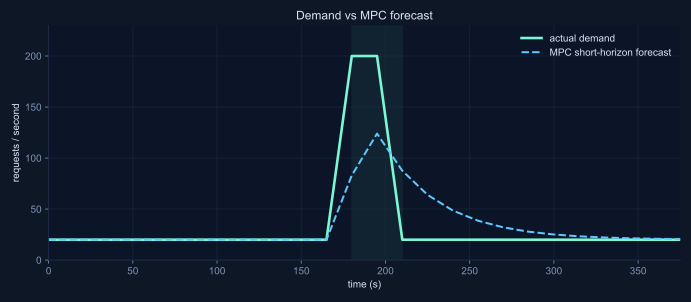
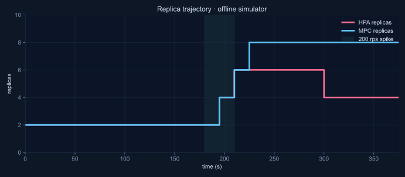

See the controller in motion — no install required.
The two charts below are rendered from real output of the offline simulator on the bundled 200 rps spike trace (baseline_spike_profile_dt15.csv). The same files you can reproduce locally with one command.
Both panels use the same input demand and the same scaling bounds (2–12 replicas, step ≤ 2). HPA is a CPU-target reactive baseline at 60%. MPC is a short-horizon (8-step) QP with normalized objective.

Demand jumps from 20 rps to 200 rps for 30 s. The MPC forecast catches the spike one step late — the inherent lag of any reactive forecaster.

HPA drains aggressively after the burst; MPC holds extra capacity for the forecast horizon. In this offline view MPC costs more replicas with no SLO win — the readiness-lag advantage does not show up here.
HPA avg 3.46 replicas max 6, SLO miss 2 / 26 steps.MPC avg 4.77 replicas max 8, SLO miss 2 / 26 steps.Offline verdict MPC uses ~38% more replicas, same SLO.
Why the live cluster tells a different story
The offline simulator assumes new replicas are ready instantly. A real Kubernetes cluster does not. On the tracked spike pair, new Pods became Ready ~40 s after the scaling decision. HPA decides only when CPU already saturates, so its new capacity arrives after the latency damage is done. MPC scales on the forecast and gets there earlier.
Same load, same workload, same image. The number that flips:
HPA p95 ≈ 85 ms on the live 200 rps spike.MPC p95 ≈ 52 ms — about 38% lower.30 s burst MPC still loses — the lag is longer than the event.